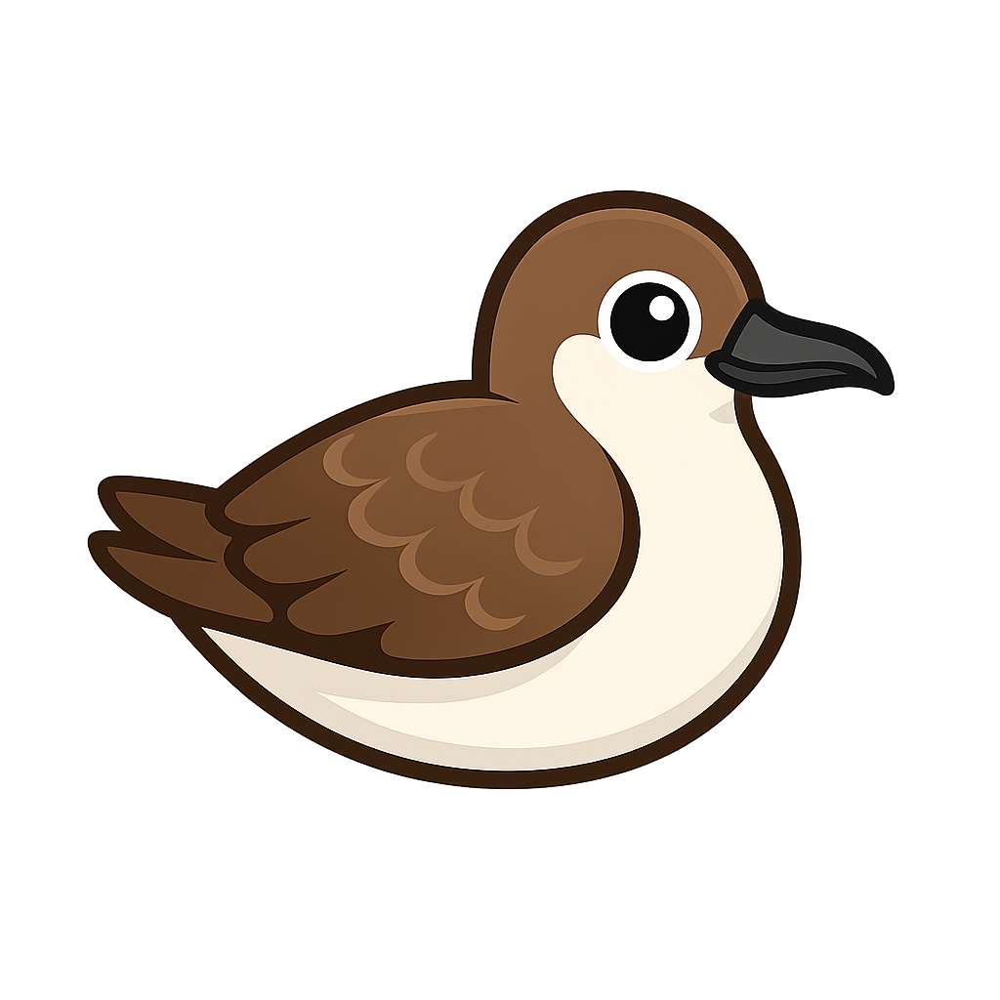

PerdixACESSO ALTERNATIVO
Quatro caminhos, os destinos certos.
Escolha como acessar a Perdix ou o Foco. Se a sua rede bloquear domínios personalizados, use a rota direta pelo CDN.
Qual ambiente você quer abrir?
SITE INSTITUCIONAL
Perdix pelo domínio
A rota padrão para o site da Perdix: www.perdix.com.br.
Acessar Perdix →
SITE INSTITUCIONAL
Perdix pelo CDN
Acesso direto ao conteúdo da Perdix, sem usar o domínio personalizado.
Acessar Perdix →
PLATAFORMA DE ESTUDOS
Foco pelo domínio
Acesse a sua plataforma de estudos pela rota principal: foco.perdix.com.br.
Abrir o Foco →
PLATAFORMA DE ESTUDOS
Foco pela rota alternativa
Acesso ao Foco por uma rota alternativa, útil em redes que bloqueiam domínios personalizados.
Abrir o Foco →